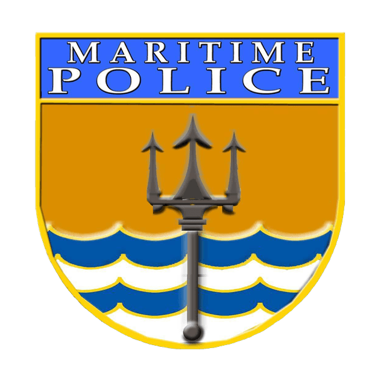
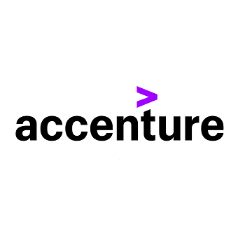

Journey
Experience


Philippine National Police - Maritime Group
Internship - Full Stack Web Developer
Feb - May 2026 | Camp Crame, Quezon City
During my internship at the PNP Maritime Group, I contributed to the design, development, and implementation of the Maritime Vessel Inventory System (MVIS) and the PRS Memo Tracking System. I worked on both front-end and back-end development, helping create user-friendly interfaces, manage database operations, and implement system functionalities that improved the efficiency of vessel inventory management and memo tracking processes.
This experience strengthened my skills in full-stack web development, database management, system analysis, troubleshooting, and collaborative software development within a professional environment.

Accenture
Academy Trainee
Feb - May 2026
Successfully completed Accenture's training program focused on modern software development and cloud technologies. The program covered AI-assisted development using GitHub Copilot, database management with SQL, application development using C# and ASP.NET Core, Azure Cloud services, and DevOps fundamentals.
Through hands-on exercises and practical learning activities, I gained experience in building and deploying applications, utilizing AI tools to enhance productivity, managing databases, and applying cloud and DevOps practices to support efficient software development workflows.